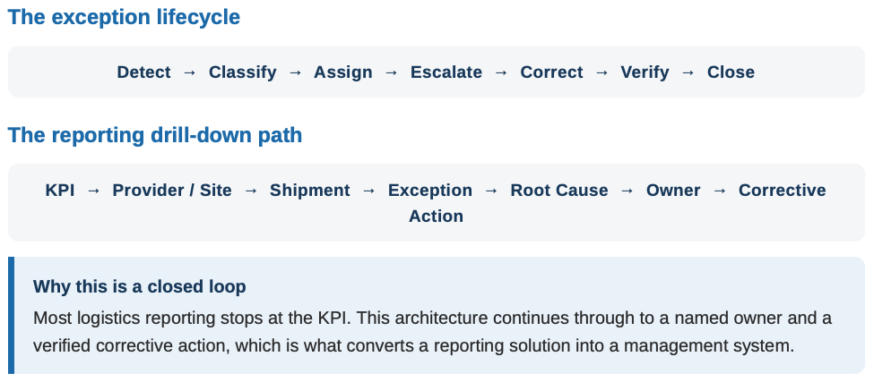
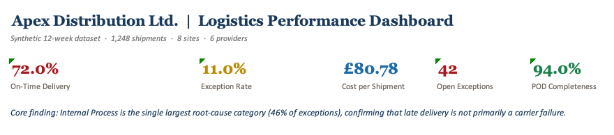
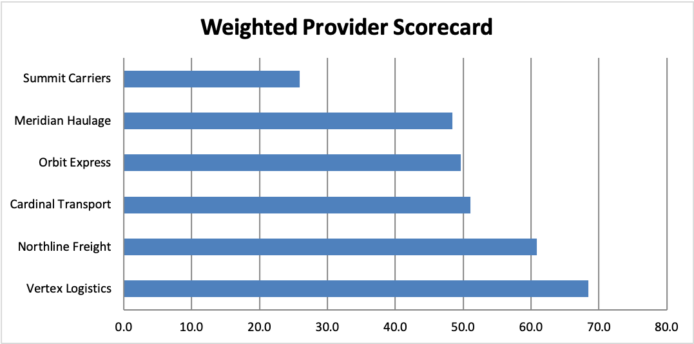
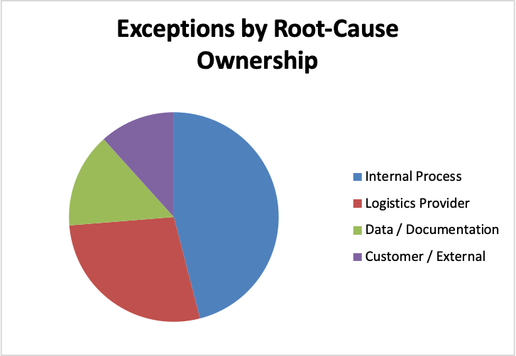
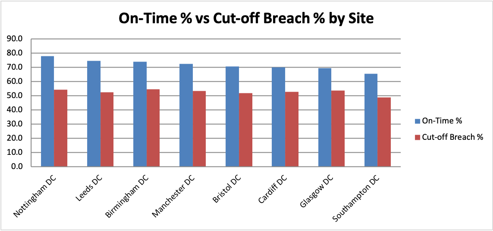

SUPPLY CHAIN OPERATIONS CASE STUDY
Designing KPI governance, provider accountability and exception management across a multi-site distribution network.
On-Time Delivery
Exception Rate
Shipments Analysed
Internal Root Causes
Apex Distribution Ltd. faced declining logistics performance, inconsistent provider reporting and limited visibility into operational issues. Through a structured logistics performance management framework, I designed a solution that standardised KPI definitions, introduced provider scorecards, established exception ownership and created executive reporting capable of linking performance issues to corrective actions.
Apex Distribution Ltd. is a fictional multi-site distribution company operating eight stocking locations, six logistics providers and 850 active SKUs.
Performance reviews relied heavily on spreadsheets and email, while each logistics provider reported performance using different formats and definitions. This made it difficult to compare providers, identify root causes and establish accountability for service failures.
Management believed logistics performance issues were primarily caused by external providers.
Analysis of 137 logistics exceptions revealed that 46% were caused by internal operational failures, while only 28% were directly attributable to logistics providers.
The real issue was not transportation performance alone. It was the absence of a common operating model capable of identifying ownership, measuring performance consistently and driving corrective action.
In this simulated engagement, I acted as the Supply Chain Operations Consultant responsible for:
Of all exceptions originated from internal operational failures.
Approximate cut-off breach rate across the network.
Of exceptions were caused by late shipment release and missed provider cut-offs.
Performance gap between highest and lowest performing providers.

The reporting framework was designed to support drill-down analysis from KPI performance to provider, shipment, exception, root cause and corrective action.




Late delivery is an outcome, not a cause.
The most valuable insight from this project was discovering that nearly half of all logistics exceptions originated within the organisation rather than with external providers.
Effective logistics performance management begins with operational discipline, clear ownership and consistent measurement before analytics, automation or predictive capabilities can deliver value.
NEXT STEP
This project demonstrates how operational governance, performance management and analytics create the foundation required for intelligent decision-support systems.
Explore the Operations Lab →